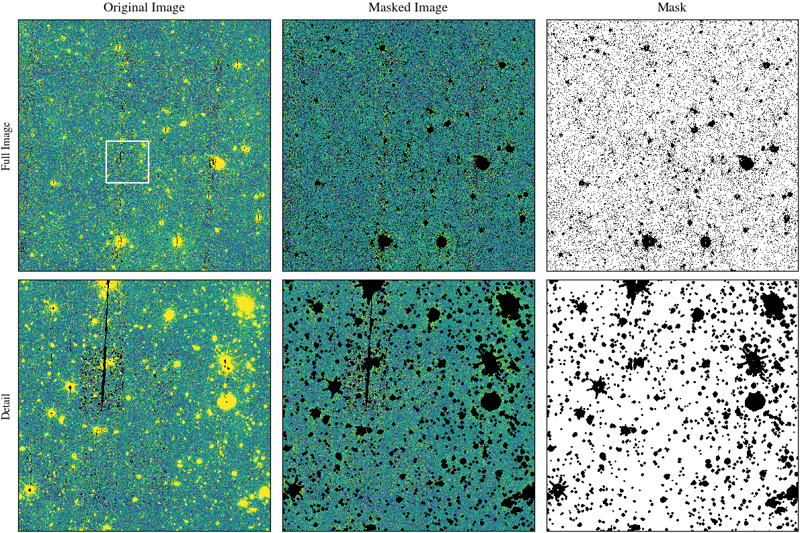
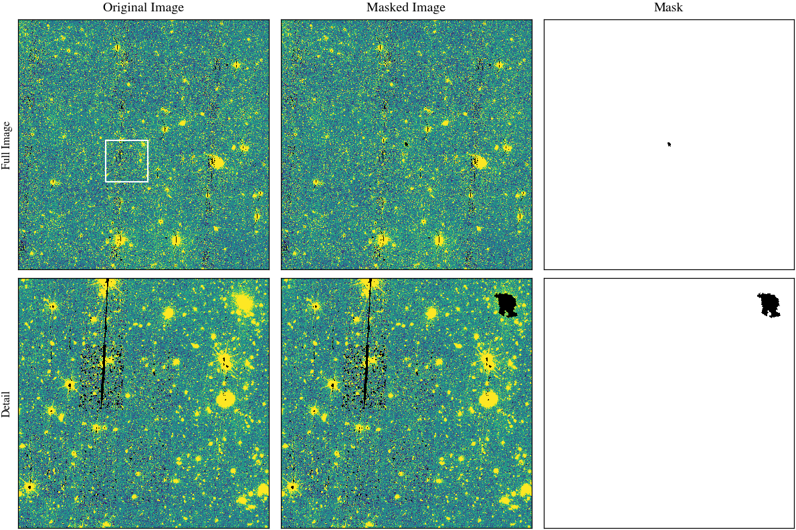
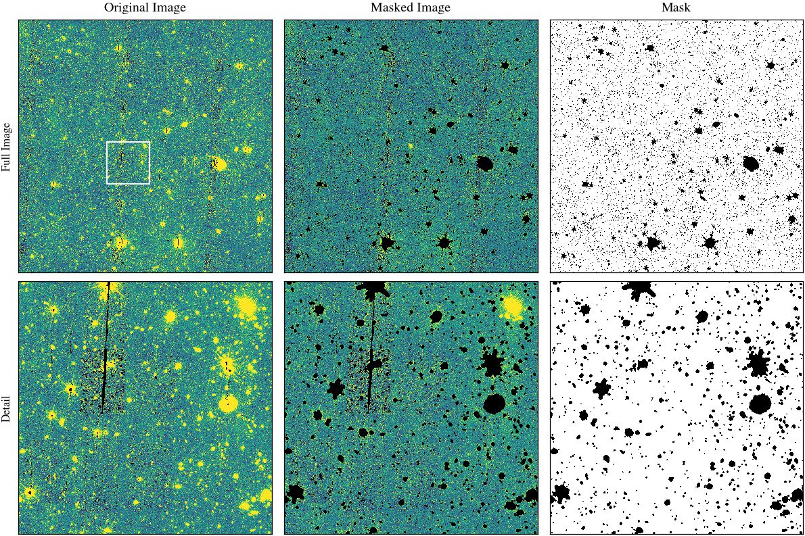
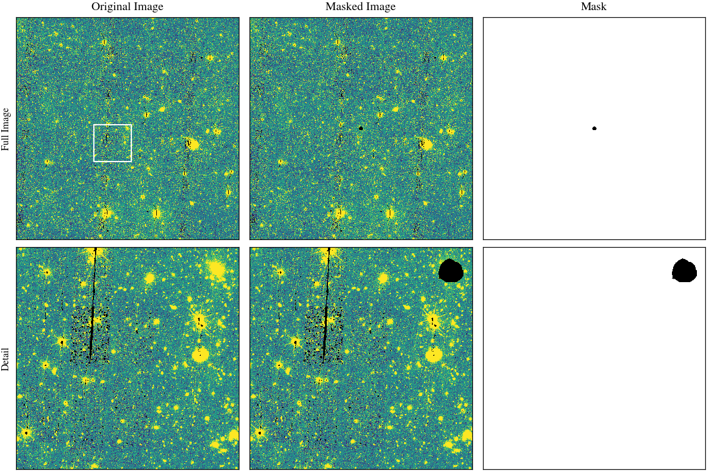
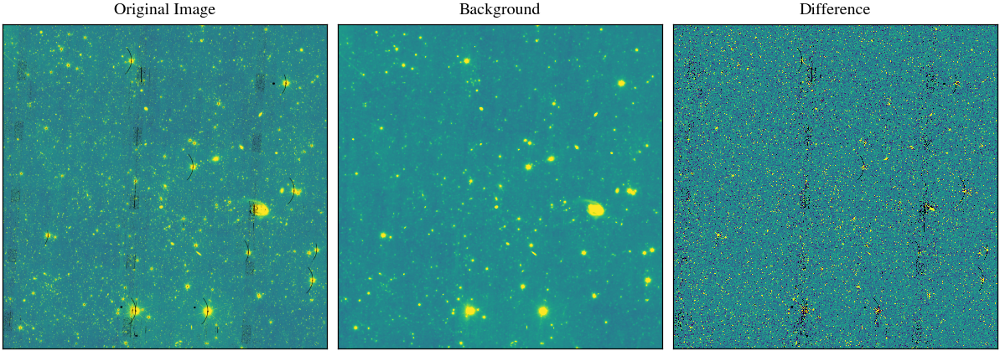
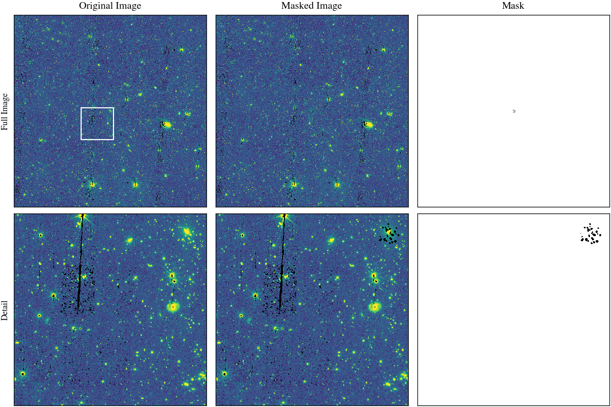
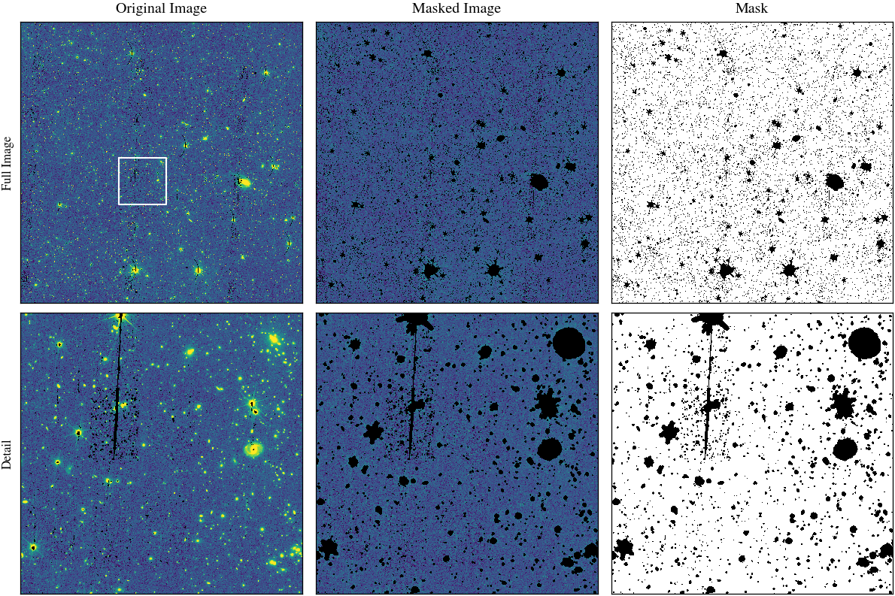
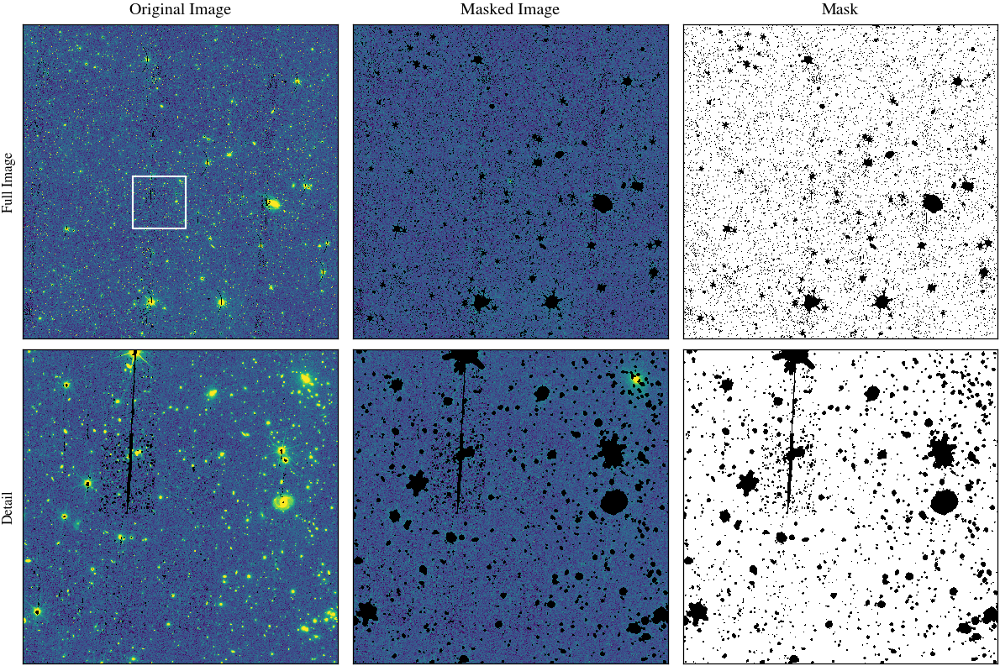

def save_masks(
masks, # Dictionary of masks returned by create_masks
output_dir,
label=None,
reference_header=None,
):
"""Save all masks produced by create_masks to disk."""
logger = logging.getLogger(__name__)
output_dir = Path(output_dir)
output_dir.mkdir(parents=True, exist_ok=True)
prefix = f"{label}_" if label else ""
for mask_name, mask in masks.items():
if mask is not None:
mask = mask.astype(np.uint8)
output_fn = output_dir / f"{prefix}{mask_name}_mask.fits"
hdu = fits.PrimaryHDU(data=mask, header=reference_header)
hdu.writeto(output_fn, overwrite=True)
logger.info(f"Saved mask: {output_fn}")mask
Mask sources in a Euclid image prior to ICL measurement.
Most of the mask functionality is not Euclid specific, so can be found in nicl.mask.
The example below uses the functions and approach we have been using for the Q1 data.
For DR1, we can likely improve the quality and efficiecncy of the masking by taking a slightly different approach, as follows:
- Input image has all bad pixels set to NaN
- Estimate background level (or assume background level is zero) and constant background rms level using robust statistics with initial mask
- Construct a simple ICL model
- Create a median smoothed version of the image
- Define detection threshold for ICL
- Detect ICL on highly smoothed image, no need to deblend
- Define an ICL mask
- Create model of the ICL by masking sources beyond the ICL mask
- Mask and/or subtract stars
- Identify stars (sources with saturated cores, maybe using propagated DQ masks, or from GAIA catalogue)
- Mask size scales as a function of star brightness
- Detect objects
- Subtract an ICL model image from the original image. This ICL model image could be a simple, as constructed above, or produced from isophotal fitting, etc.
- Estimate background level (or assume background level is zero) and constant background rms level using robust statistics on ICL subtracted image
- Define detection threshold for objects
- Create a slightly Gaussian smoothed version of the ICL-subtracted image to improve detection
- Detect objects on this image and produce segmentation image, no need to deblend
- Estimate a new constant background rms level using robust statistics and masking detected objects and ICL
- Repeat creation of simple ICL model and object detection
- Deblend final object segmentation mask
- Remove central segment (BCG) from segmentation mask
- Masks can be then be produced from the object segmentation mask with a variety of growth models. This could include proportional growth (such that larger objects are grown more) and could also modulate growth depending whether inside ICL region (or based on distance to cluster centre), to avoid overmasking in central region.
- Define BCG mask on slightly smoothed image (but perhaps not needed any more as we could apply the isophotal threshold on the extracted profiles)
calc_sb_threshold
def calc_sb_threshold(
z, # cluster redshift
filter, # Euclid filter: VIS, Y, J or H
):
Determine the ICL surface brightness threshold for a given redshift and Euclid filter.
create_masks
def create_masks(
image, # the image to mask, with bad pixels set to NaN, as a CCDImage or filename
z:NoneType=None, # the cluster redshift for the BCG mask; if None then returned BCG mask is None
filter:NoneType=None, # the filter name for the BCG mask; if None then returned BCG mask is None
centre_pos:NoneType=None, # the position of the BCG/cluster centre; set to False for a non-cluster image
make_bcg_mask:bool=False, # whether to create a BCG mask to a standard surface brightness threshold
make_faint_mask:bool=True, # whether to create a separate object mask in the ICL region
zeropoint:str='ZPAB', # the zeropoint, either as a header keyword or numeric value
icl_bkg_box_size:int=300
):
Create BCG, ICL, object and faint masks with default settings for Euclid data.
These default settings are to be refined.
make_mask_plot
def make_mask_plot(
image, masks, output_dir:NoneType=None, label:NoneType=None
):
Call self as a function.
create_nir_mask
def create_nir_mask(
NIR_filename, filter, output_dir:NoneType=None, label:NoneType=None, centre_pos:NoneType=None,
redshift:NoneType=None, icl_bkg_box_size:int=300
):
Create a NIR mask for use when measuring ICL.
create_vis_mask
def create_vis_mask(
VIS_filename, output_dir:NoneType=None, label:NoneType=None, centre_pos:NoneType=None, redshift:NoneType=None,
icl_bkg_box_size:int=300
):
Create a VIS mask for use when measuring ICL.
create_single_band_mask
def create_single_band_mask(
image_filename, filter, output_dir:NoneType=None, label:NoneType=None, centre_pos:NoneType=None,
redshift:NoneType=None, icl_bkg_box_size:int=300
):
Create a VIS mask for use when measuring ICL.
create_combined_nir_mask
def create_combined_nir_mask(
H_filename, J_filename, Y_filename, output_dir:NoneType=None, label:NoneType=None, centre_pos:NoneType=None,
icl_bkg_box_size:int=300, nir_stack_bkg_box_size:int=300, keep_temp_files:bool=False
):
Create a combined NIR mask for use when measuring ICL.
stack_nir_bands
def stack_nir_bands(
H_filename, J_filename, Y_filename, output_dir:NoneType=None, label:NoneType=None
):
Stack NIR images and optionally save to disk. Returns a CCDData object.
Examples applying nicl.mask functions to Euclid data
configure_logging(name="__main__", level="DEBUG")
configure_logging(name="nicl.mask", level="DEBUG")<Logger nicl.mask (DEBUG)>Cluster cutout
# cluster_id = "MCXCJ1754.6+6803"
# path = default_data_path("Q1_R1_clusters_test", cluster_id)
# filter = "H"
# fn = path / f"persistence/EUC_NIR_W-STK_{filter}_{cluster_id}.fits"
# image = CCDData.read(fn, unit="adu")
# cluster_z = 0.07
# bcg_pos = SkyCoord(268.662 * u.deg, 68.058 * u.deg, frame="icrs")
cluster_id = "EDFS_eRASS_65"
path = Path("/home/ppztk1/euclid_data/Q1_R1_clusters_v1.0/TK")
filter = "H"
fn = path / f"EUC_NIR_W-STK_{filter}-{cluster_id}.fits"
print(f"Processing {fn}")
image = CCDData.read(fn, unit="adu")
cluster_z = 0.5807
bcg_pos = SkyCoord(64.34614326413711 * u.deg, -47.8132268607819 * u.deg, frame="icrs")2025-10-16 17:39:06 - astropy.fits_ccddata_reader - INFO - first HDU with data is extension 1.Processing /home/ppztk1/euclid_data/Q1_R1_clusters_v1.0/TK/EUC_NIR_W-STK_H-EDFS_eRASS_65.fits
INFO: first HDU with data is extension 1. [astropy.nddata.ccddata]Fast masking
fast_object_mask, fast_threshold = fast_mask(image.data)2025-10-16 17:09:02 - nicl.mask.fast_mask - INFO - Creating fast mask
2025-10-16 17:09:02 - nicl.mask.fast_mask - DEBUG - smoothing image with sigma of 1.0 pixels
2025-10-16 17:09:11 - nicl.mask.fast_mask - DEBUG - iteration 0
2025-10-16 17:09:18 - nicl.mask.fast_mask - DEBUG - background RMS is 0.02203
2025-10-16 17:09:18 - nicl.mask.fast_mask - INFO - 2.0 sigma threshold is 0.04407
2025-10-16 17:09:19 - nicl.mask.fast_mask - DEBUG - eroding mask with 1 iterations
2025-10-16 17:09:19 - nicl.mask.fast_mask - DEBUG - dilating mask with radius 2.0 pixels for 2 iterations
2025-10-16 17:09:19 - nicl.mask.fast_mask - DEBUG - iteration 1
2025-10-16 17:09:26 - nicl.mask.fast_mask - DEBUG - background RMS is 0.02006
2025-10-16 17:09:26 - nicl.mask.fast_mask - INFO - 2.0 sigma threshold is 0.04012
2025-10-16 17:09:26 - nicl.mask.fast_mask - DEBUG - eroding mask with 1 iterations
2025-10-16 17:09:26 - nicl.mask.fast_mask - DEBUG - dilating mask with radius 2.0 pixels for 2 iterations
2025-10-16 17:09:27 - nicl.mask.fast_mask - DEBUG - iteration 2
2025-10-16 17:09:34 - nicl.mask.fast_mask - DEBUG - background RMS is 0.02000
2025-10-16 17:09:34 - nicl.mask.fast_mask - INFO - 2.0 sigma threshold is 0.04000
2025-10-16 17:09:35 - nicl.mask.fast_mask - DEBUG - eroding mask with 1 iterations
2025-10-16 17:09:35 - nicl.mask.fast_mask - DEBUG - dilating mask with radius 2.0 pixels for 2 iterations
2025-10-16 17:09:36 - nicl.mask.fast_mask - DEBUG - iteration 3
2025-10-16 17:09:43 - nicl.mask.fast_mask - DEBUG - background RMS is 0.02000plot_mask(image, fast_object_mask, detail=True, background_focus=True)
Comparing performance of binary dilation and erosion implementations
for r in [1, 2, 3, 5, 10, 25]:
iterations = 3
structure = circular_footprint(r)
print(f"Structure radius: {r}, iterations: {iterations}")
t1 = time.time()
regular_dilation = binary_dilation(
fast_object_mask, structure=structure, iterations=iterations
)
t2 = time.time()
fft_dilation = fft_binary_dilation(
fast_object_mask, structure=structure, iterations=iterations
)
t3 = time.time()
regular_erosion = binary_erosion(
fast_object_mask, structure=structure, iterations=iterations
)
t4 = time.time()
fft_erosion = fft_binary_erosion(
fast_object_mask, structure=structure, iterations=iterations
)
t5 = time.time()
dilation_match = np.all(regular_dilation == fft_dilation)
erosion_match = np.all(regular_erosion == fft_erosion)
print(f" Regular: dilation {t2 - t1:.2f} s, erosion {t4 - t3:.2f} s")
print(f" FFT: dilation {t3 - t2:.2f} s, erosion {t5 - t4:.2f} s")
print(f" Match: dilation {dilation_match}, erosion {erosion_match}")Structure radius: 1, iterations: 3
Regular: dilation 0.40 s, erosion 0.30 s
FFT: dilation 98.99 s, erosion 80.84 s
Match: dilation True, erosion True
Structure radius: 2, iterations: 3
Regular: dilation 0.66 s, erosion 0.45 s
FFT: dilation 74.18 s, erosion 70.17 s
Match: dilation True, erosion True
Structure radius: 3, iterations: 3
Regular: dilation 1.30 s, erosion 0.44 s
FFT: dilation 73.01 s, erosion 75.55 s
Match: dilation True, erosion True
Structure radius: 5, iterations: 3
Regular: dilation 2.68 s, erosion 0.80 s
FFT: dilation 77.74 s, erosion 83.15 s
Match: dilation True, erosion True
Structure radius: 10, iterations: 3
Regular: dilation 10.32 s, erosion 1.68 s
FFT: dilation 60.62 s, erosion 91.69 s
Match: dilation True, erosion True
Structure radius: 25, iterations: 3
Regular: dilation 48.19 s, erosion 7.23 s
FFT: dilation 77.49 s, erosion 72.49 s
Match: dilation True, erosion TrueDetailed masking
Bad pixel mask
This mask excludes pixels that have been identified as bad by the reduction process, e.g. due to saturation or lack of data.
Bright star mask
Potentially mask to exclude the regions affected by bright stars.
BCG mask
sb_threshold = calc_sb_threshold(cluster_z, filter)
sb_adu_threshold = sb_to_adu(
sb_threshold.to_value(u.ABmag), get_pixel_scale(image), image.header["ZPAB"]
)
print(
f"SB threshold for filter {filter} at z={cluster_z:.2f} is {sb_threshold:.2f}, which is {sb_adu_threshold:.2f} adu."
)SB threshold for filter H at z=0.58 is 24.50 mag(AB), which is 0.05 adu.bcg_mask = create_bcg_mask(
image.data, sb_threshold=sb_adu_threshold, centre_pos=bcg_pos, wcs=image.wcs
)2025-10-16 15:56:10 - nicl.mask.create_bcg_mask - INFO - Creating BCG mask
2025-10-16 15:56:18 - nicl.mask.get_label_at_position - DEBUG - Determining label at pixel index (2999, 2999)
2025-10-16 15:56:18 - nicl.mask.keep_segment_at_position - DEBUG - Keeping segment with label 24823plot_mask(image, bcg_mask, detail=True, background_focus=True)
ICL mask
icl_mask, icl_smoothed_image, icl_smooth_sigma = create_icl_mask(
image.data,
centre_pos=bcg_pos,
wcs=image.wcs,
nsigma=ICL_NSIGMA,
initial_smooth_sigma=ICL_INITIAL_SMOOTH_SIGMA,
bkg_box_size=ICL_BKG_BOX_SIZE,
bkg_filter_size=ICL_BKG_FILTER_SIZE,
dilation_factor=ICL_DILATION_FACTOR,
median_filter=ICL_MEDIAN_FILTER,
)2025-10-16 17:39:11 - nicl.mask.create_icl_mask - INFO - Creating ICL mask
2025-10-16 17:39:11 - nicl.mask.create_icl_mask - DEBUG - Estimating background with box size 300 and filter size 3
2025-10-16 17:39:43 - nicl.mask.create_icl_mask - DEBUG - Average 2 sigma detection threshold is 0.04200
2025-10-16 17:39:43 - nicl.mask.create_icl_mask - DEBUG - Starting binary search for ICL smoothing sigma
2025-10-16 17:39:43 - nicl.mask.create_icl_mask - DEBUG - Smoothing image with sigma=20.0
2025-10-16 17:39:43 - nicl.mask.create_icl_mask - DEBUG - Smoothing with a sampled median filter
2025-10-16 17:41:20 - nicl.mask.create_icl_mask - DEBUG - Detecting sources
2025-10-16 17:41:26 - nicl.mask.create_icl_mask - DEBUG - Initial segmentation map contains 79 sources
2025-10-16 17:41:26 - nicl.mask.create_icl_mask - DEBUG - Keeping segment at specified position
2025-10-16 17:41:26 - nicl.mask.get_label_at_position - DEBUG - Determining label at pixel index (2999, 2999)
2025-10-16 17:41:26 - nicl.mask.keep_segment_at_position - DEBUG - Keeping segment with label 49
2025-10-16 17:41:30 - nicl.mask.create_icl_mask - DEBUG - Segmentation map now contains 1 sources
2025-10-16 17:41:30 - nicl.mask.create_icl_mask - DEBUG - No upper smoothing limit found yet, increasing size of smoothing kernel
2025-10-16 17:41:30 - nicl.mask.create_icl_mask - DEBUG - Smoothing image with sigma=40.0
2025-10-16 17:41:30 - nicl.mask.create_icl_mask - DEBUG - Smoothing with a sampled median filter
2025-10-16 17:42:42 - nicl.mask.create_icl_mask - DEBUG - Detecting sources
2025-10-16 17:42:44 - nicl.mask.create_icl_mask - DEBUG - Initial segmentation map contains 16 sources
2025-10-16 17:42:44 - nicl.mask.create_icl_mask - DEBUG - Keeping segment at specified position
2025-10-16 17:42:44 - nicl.mask.get_label_at_position - DEBUG - Determining label at pixel index (2999, 2999)
2025-10-16 17:42:44 - nicl.mask.keep_segment_at_position - DEBUG - No segment found at specified position
2025-10-16 17:42:44 - nicl.mask.create_icl_mask - DEBUG - No source detected at specified position
2025-10-16 17:42:44 - nicl.mask.create_icl_mask - DEBUG - Smoothing image with sigma=30.0
2025-10-16 17:42:44 - nicl.mask.create_icl_mask - DEBUG - Smoothing with a sampled median filter
2025-10-16 17:44:00 - nicl.mask.create_icl_mask - DEBUG - Detecting sources
2025-10-16 17:44:04 - nicl.mask.create_icl_mask - DEBUG - Initial segmentation map contains 29 sources
2025-10-16 17:44:04 - nicl.mask.create_icl_mask - DEBUG - Keeping segment at specified position
2025-10-16 17:44:04 - nicl.mask.get_label_at_position - DEBUG - Determining label at pixel index (2999, 2999)
2025-10-16 17:44:04 - nicl.mask.keep_segment_at_position - DEBUG - Keeping segment with label 18
2025-10-16 17:44:07 - nicl.mask.create_icl_mask - DEBUG - Segmentation map now contains 1 sources
2025-10-16 17:44:07 - nicl.mask.create_icl_mask - DEBUG - Smoothing image with sigma=35.0
2025-10-16 17:44:07 - nicl.mask.create_icl_mask - DEBUG - Smoothing with a sampled median filter
2025-10-16 17:45:11 - nicl.mask.create_icl_mask - DEBUG - Detecting sources
2025-10-16 17:45:13 - nicl.mask.create_icl_mask - DEBUG - Initial segmentation map contains 20 sources
2025-10-16 17:45:13 - nicl.mask.create_icl_mask - DEBUG - Keeping segment at specified position
2025-10-16 17:45:13 - nicl.mask.get_label_at_position - DEBUG - Determining label at pixel index (2999, 2999)
2025-10-16 17:45:13 - nicl.mask.keep_segment_at_position - DEBUG - No segment found at specified position
2025-10-16 17:45:13 - nicl.mask.create_icl_mask - DEBUG - No source detected at specified position
2025-10-16 17:45:13 - nicl.mask.create_icl_mask - DEBUG - Smoothing image with sigma=32.5
2025-10-16 17:45:13 - nicl.mask.create_icl_mask - DEBUG - Smoothing with a sampled median filter
2025-10-16 17:46:17 - nicl.mask.create_icl_mask - DEBUG - Detecting sources
2025-10-16 17:46:20 - nicl.mask.create_icl_mask - DEBUG - Initial segmentation map contains 28 sources
2025-10-16 17:46:20 - nicl.mask.create_icl_mask - DEBUG - Keeping segment at specified position
2025-10-16 17:46:20 - nicl.mask.get_label_at_position - DEBUG - Determining label at pixel index (2999, 2999)
2025-10-16 17:46:20 - nicl.mask.keep_segment_at_position - DEBUG - Keeping segment with label 18
2025-10-16 17:46:24 - nicl.mask.create_icl_mask - DEBUG - Segmentation map now contains 1 sources
2025-10-16 17:46:24 - nicl.mask.create_icl_mask - DEBUG - Smoothing image with sigma=33.75
2025-10-16 17:46:24 - nicl.mask.create_icl_mask - DEBUG - Smoothing with a sampled median filter
2025-10-16 17:47:31 - nicl.mask.create_icl_mask - DEBUG - Detecting sources
2025-10-16 17:47:32 - nicl.mask.create_icl_mask - DEBUG - Initial segmentation map contains 25 sources
2025-10-16 17:47:32 - nicl.mask.create_icl_mask - DEBUG - Keeping segment at specified position
2025-10-16 17:47:32 - nicl.mask.get_label_at_position - DEBUG - Determining label at pixel index (2999, 2999)
2025-10-16 17:47:32 - nicl.mask.keep_segment_at_position - DEBUG - Keeping segment with label 17
2025-10-16 17:47:36 - nicl.mask.create_icl_mask - DEBUG - Segmentation map now contains 1 sources
2025-10-16 17:47:36 - nicl.mask.create_icl_mask - DEBUG - Required smooth_sigma accuracy achieved: 3.70%
2025-10-16 17:47:36 - nicl.mask.create_icl_mask - DEBUG - Creating source mask with dilation radius 1.0 * 33.75 = 34 pixels
2025-10-16 17:47:53 - nicl.mask.create_icl_mask - INFO - ICL mask created, 8216 pixels masked (0.02%)plot_mask(image, icl_mask, detail=True, background_focus=True)Regular object mask
object_mask, bkg, threshold, centre_mask = create_object_mask(
image.data,
exclude_mask=icl_mask,
growth=REGULAR_GROWTH,
detection_params=REGULAR_DETECTION_PARAMS,
)2025-07-24 14:50:45 - nicl.mask.create_object_mask - INFO - Creating object mask
2025-07-24 14:50:45 - nicl.mask.create_object_mask - DEBUG - Estimating background and detection threshold
2025-07-24 14:51:01 - nicl.mask.create_object_mask - DEBUG - Average 3.0 sigma detection threshold is 0.06295
2025-07-24 14:51:01 - nicl.mask.create_object_mask - DEBUG - Smoothing image
2025-07-24 14:51:09 - nicl.mask.create_object_mask - DEBUG - Detecting sources
2025-07-24 14:51:12 - nicl.mask.create_object_mask - DEBUG - Deblending 29679 sources
2025-07-24 14:52:03 - nicl.mask.create_object_mask - DEBUG - Object mask contains 31998 sources
2025-07-24 14:52:03 - nicl.mask.create_object_mask - DEBUG - Supplied exclude mask contains 9097 pixels
2025-07-24 14:52:05 - nicl.mask.create_object_mask - DEBUG - Removed 27 sources at the centre
2025-07-24 14:52:05 - nicl.mask.create_object_mask - DEBUG - Object mask now contains 31971 sources
2025-07-24 14:52:07 - nicl.mask.create_object_mask - DEBUG - New exclude mask contains 9175 pixels
2025-07-24 14:52:07 - nicl.mask.create_object_mask - DEBUG - Dilating mask
2025-07-24 14:52:07 - nicl.mask.dilated_object_mask - INFO - Dilating object mask with growth factor of 0.5
2025-07-24 14:52:09 - nicl.mask.dilated_object_mask - DEBUG - current minimum size is 2 pixels
2025-07-24 14:52:09 - nicl.mask.dilated_object_mask - DEBUG - removing 9566 segments smaller than 12.57 squared pixels
2025-07-24 14:52:10 - nicl.mask.dilated_object_mask - DEBUG - 22405 segments remaining
2025-07-24 14:52:10 - nicl.mask.dilated_object_mask - DEBUG - seeking to grow objects with radius 2 pixels by 1.0 pixels
2025-07-24 14:52:10 - nicl.mask.dilated_object_mask - DEBUG - applying dilation with radius 1 pixels
2025-07-24 14:52:24 - nicl.mask.dilated_object_mask - DEBUG - new mask contains 2150944 pixels
2025-07-24 14:52:24 - nicl.mask.dilated_object_mask - DEBUG - currently 2333151 pixels masked (6.48%)
2025-07-24 14:52:24 - nicl.mask.dilated_object_mask - DEBUG - current minimum size is 4 pixels
2025-07-24 14:52:24 - nicl.mask.dilated_object_mask - DEBUG - removing 16145 segments smaller than 50.27 squared pixels
2025-07-24 14:52:25 - nicl.mask.dilated_object_mask - DEBUG - 6260 segments remaining
2025-07-24 14:52:25 - nicl.mask.dilated_object_mask - DEBUG - seeking to grow objects with radius 4 pixels by 2.0 pixels
2025-07-24 14:52:25 - nicl.mask.dilated_object_mask - DEBUG - applying dilation with radius 2 pixels
2025-07-24 14:52:40 - nicl.mask.dilated_object_mask - DEBUG - new mask contains 1730008 pixels
2025-07-24 14:52:40 - nicl.mask.dilated_object_mask - DEBUG - currently 2609566 pixels masked (7.25%)
2025-07-24 14:52:40 - nicl.mask.dilated_object_mask - DEBUG - current minimum size is 8 pixels
2025-07-24 14:52:40 - nicl.mask.dilated_object_mask - DEBUG - removing 5245 segments smaller than 201.06 squared pixels
2025-07-24 14:52:41 - nicl.mask.dilated_object_mask - DEBUG - 1015 segments remaining
2025-07-24 14:52:41 - nicl.mask.dilated_object_mask - DEBUG - seeking to grow objects with radius 8 pixels by 4.0 pixels
2025-07-24 14:52:41 - nicl.mask.dilated_object_mask - DEBUG - applying dilation with radius 4 pixels
2025-07-24 14:52:53 - nicl.mask.dilated_object_mask - DEBUG - new mask contains 1142303 pixels
2025-07-24 14:52:53 - nicl.mask.dilated_object_mask - DEBUG - currently 2815549 pixels masked (7.82%)
2025-07-24 14:52:53 - nicl.mask.dilated_object_mask - DEBUG - current minimum size is 16 pixels
2025-07-24 14:52:53 - nicl.mask.dilated_object_mask - DEBUG - removing 825 segments smaller than 804.25 squared pixels
2025-07-24 14:52:55 - nicl.mask.dilated_object_mask - DEBUG - 190 segments remaining
2025-07-24 14:52:55 - nicl.mask.dilated_object_mask - DEBUG - seeking to grow objects with radius 16 pixels by 8.0 pixels
2025-07-24 14:52:55 - nicl.mask.dilated_object_mask - DEBUG - applying dilation with radius 8 pixels
2025-07-24 14:53:09 - nicl.mask.dilated_object_mask - DEBUG - new mask contains 795844 pixels
2025-07-24 14:53:09 - nicl.mask.dilated_object_mask - DEBUG - currently 2963058 pixels masked (8.23%)
2025-07-24 14:53:09 - nicl.mask.dilated_object_mask - DEBUG - current minimum size is 32 pixels
2025-07-24 14:53:09 - nicl.mask.dilated_object_mask - DEBUG - removing 157 segments smaller than 3216.99 squared pixels
2025-07-24 14:53:11 - nicl.mask.dilated_object_mask - DEBUG - 33 segments remaining
2025-07-24 14:53:11 - nicl.mask.dilated_object_mask - DEBUG - seeking to grow objects with radius 32 pixels by 16.0 pixels
2025-07-24 14:53:11 - nicl.mask.dilated_object_mask - DEBUG - applying dilation with radius 16 pixels
2025-07-24 14:53:22 - nicl.mask.dilated_object_mask - DEBUG - new mask contains 393165 pixels
2025-07-24 14:53:23 - nicl.mask.dilated_object_mask - DEBUG - currently 3027356 pixels masked (8.41%)
2025-07-24 14:53:23 - nicl.mask.dilated_object_mask - DEBUG - current minimum size is 64 pixels
2025-07-24 14:53:23 - nicl.mask.dilated_object_mask - DEBUG - removing 32 segments smaller than 12867.96 squared pixels
2025-07-24 14:53:24 - nicl.mask.dilated_object_mask - DEBUG - 1 segments remaining
2025-07-24 14:53:24 - nicl.mask.dilated_object_mask - DEBUG - seeking to grow objects with radius 64 pixels by 32.0 pixels
2025-07-24 14:53:24 - nicl.mask.dilated_object_mask - DEBUG - applying dilation with radius 32 pixels
2025-07-24 14:53:37 - nicl.mask.dilated_object_mask - DEBUG - new mask contains 56792 pixels
2025-07-24 14:53:37 - nicl.mask.dilated_object_mask - DEBUG - currently 3029895 pixels masked (8.42%)
2025-07-24 14:53:37 - nicl.mask.dilated_object_mask - DEBUG - current minimum size is 128 pixels
2025-07-24 14:53:37 - nicl.mask.dilated_object_mask - DEBUG - removing 1 segments smaller than 51471.85 squared pixels
2025-07-24 14:53:39 - nicl.mask.dilated_object_mask - DEBUG - 0 segments remainingplot_mask(image, object_mask, detail=True, background_focus=True)
plot_mask(image, centre_mask, detail=True, background_focus=True)
Faint object mask
faint_bkg_sigma = FAINT_BKG_SIGMA_FACTOR * icl_smooth_sigma
faint_mask, faint_bkg, faint_threshold = create_faint_mask(
image.data,
include_mask=centre_mask,
exclude_position=bcg_pos,
wcs=image.wcs,
growth=FAINT_GROWTH,
detection_params=FAINT_DETECTION_PARAMS,
bkg_sigma=faint_bkg_sigma,
)2025-07-24 14:58:34 - nicl.mask.create_faint_mask - INFO - Estimating background
2025-07-24 15:04:42 - nicl.mask.create_faint_mask - INFO - Average 2.0 sigma detection threshold is nan
2025-07-24 15:04:42 - nicl.mask.create_faint_mask - INFO - Smoothing image
2025-07-24 15:04:49 - nicl.mask.create_faint_mask - INFO - Creating detection mask by dilating include mask by 50 pixels
2025-07-24 15:04:57 - nicl.mask.create_faint_mask - INFO - Detecting sources
2025-07-24 15:04:59 - nicl.mask.create_faint_mask - INFO - Deblending 58 sources
2025-07-24 15:05:04 - nicl.mask.create_faint_mask - INFO - Faint mask contains 66 sources
2025-07-24 15:05:04 - nicl.mask.create_faint_mask - INFO - Keeping only objects that overlap with include_mask
2025-07-24 15:05:07 - nicl.mask.create_faint_mask - INFO - Faint mask now contains 28 sources
2025-07-24 15:05:07 - nicl.mask.create_faint_mask - INFO - Removing segment at exclude_position
2025-07-24 15:05:07 - nicl.mask.get_label_at_position - DEBUG - Determining label at pixel index (2999, 2999)
2025-07-24 15:05:09 - nicl.mask.create_faint_mask - INFO - Faint mask now contains 27 sources
2025-07-24 15:05:09 - nicl.mask.create_faint_mask - INFO - Dilating mask
2025-07-24 15:05:09 - nicl.mask.dilated_object_mask - INFO - Dilating object mask with growth factor of 0.25
2025-07-24 15:05:11 - nicl.mask.dilated_object_mask - DEBUG - current minimum size is 2 pixels
2025-07-24 15:05:11 - nicl.mask.dilated_object_mask - DEBUG - removing 2 segments smaller than 12.57 squared pixels
2025-07-24 15:05:13 - nicl.mask.dilated_object_mask - DEBUG - 25 segments remaining
2025-07-24 15:05:13 - nicl.mask.dilated_object_mask - DEBUG - seeking to grow objects with radius 2 pixels by 0.5 pixels
2025-07-24 15:05:13 - nicl.mask.dilated_object_mask - DEBUG - applying dilation with radius 1 pixels
2025-07-24 15:05:26 - nicl.mask.dilated_object_mask - DEBUG - new mask contains 2055 pixels
2025-07-24 15:05:27 - nicl.mask.dilated_object_mask - DEBUG - currently 2094 pixels masked (0.01%)
2025-07-24 15:05:27 - nicl.mask.dilated_object_mask - DEBUG - current minimum size is 4 pixels
2025-07-24 15:05:27 - nicl.mask.dilated_object_mask - DEBUG - removing 12 segments smaller than 50.27 squared pixels
2025-07-24 15:05:29 - nicl.mask.dilated_object_mask - DEBUG - 13 segments remaining
2025-07-24 15:05:29 - nicl.mask.dilated_object_mask - DEBUG - seeking to grow objects with radius 4 pixels by 1.0 pixels
2025-07-24 15:05:29 - nicl.mask.dilated_object_mask - DEBUG - applying dilation with radius 1 pixels
2025-07-24 15:05:42 - nicl.mask.dilated_object_mask - DEBUG - new mask contains 1457 pixels
2025-07-24 15:05:42 - nicl.mask.dilated_object_mask - DEBUG - currently 2094 pixels masked (0.01%)
2025-07-24 15:05:42 - nicl.mask.dilated_object_mask - DEBUG - current minimum size is 8 pixels
2025-07-24 15:05:42 - nicl.mask.dilated_object_mask - DEBUG - removing 13 segments smaller than 201.06 squared pixels
2025-07-24 15:05:43 - nicl.mask.dilated_object_mask - DEBUG - 0 segments remainingplot_background(image, faint_bkg, image.data - faint_bkg, "Difference")
plot_mask(image, faint_mask, detail=True)
All in one
masks = create_masks(
image,
z=cluster_z,
filter=filter,
centre_pos=bcg_pos,
zeropoint="ZPAB",
)2025-07-24 15:10:52 - nicl.mask.create_icl_mask - INFO - Creating ICL mask
2025-07-24 15:10:52 - nicl.mask.create_icl_mask - DEBUG - Estimating background with box size 300 and filter size 3
2025-07-24 15:11:06 - nicl.mask.create_icl_mask - DEBUG - Average 2 sigma detection threshold is 0.04200
2025-07-24 15:11:06 - nicl.mask.create_icl_mask - DEBUG - Smoothing image with sigma=100.0
2025-07-24 15:11:06 - nicl.mask.create_icl_mask - DEBUG - Smoothing with a sampled median filter
2025-07-24 15:11:46 - nicl.mask.create_icl_mask - DEBUG - Detecting sources
2025-07-24 15:11:48 - nicl.mask.create_icl_mask - DEBUG - Initial segmentation map contains 2 sources
2025-07-24 15:11:48 - nicl.mask.create_icl_mask - DEBUG - Keeping segment at specified position
2025-07-24 15:11:48 - nicl.mask.get_label_at_position - DEBUG - Determining label at pixel index (2999, 2999)
2025-07-24 15:11:48 - nicl.mask.keep_segment_at_position - DEBUG - No segment found at specified position
2025-07-24 15:11:48 - nicl.mask.create_icl_mask - DEBUG - No ICL segment found, reducing size of smoothing kernel
2025-07-24 15:11:48 - nicl.mask.create_icl_mask - DEBUG - Smoothing image with sigma=80.0
2025-07-24 15:11:48 - nicl.mask.create_icl_mask - DEBUG - Smoothing with a sampled median filter
2025-07-24 15:12:29 - nicl.mask.create_icl_mask - DEBUG - Detecting sources
2025-07-24 15:12:31 - nicl.mask.create_icl_mask - DEBUG - Initial segmentation map contains 3 sources
2025-07-24 15:12:31 - nicl.mask.create_icl_mask - DEBUG - Keeping segment at specified position
2025-07-24 15:12:31 - nicl.mask.get_label_at_position - DEBUG - Determining label at pixel index (2999, 2999)
2025-07-24 15:12:31 - nicl.mask.keep_segment_at_position - DEBUG - No segment found at specified position
2025-07-24 15:12:31 - nicl.mask.create_icl_mask - DEBUG - No ICL segment found, reducing size of smoothing kernel
2025-07-24 15:12:31 - nicl.mask.create_icl_mask - DEBUG - Smoothing image with sigma=64.0
2025-07-24 15:12:31 - nicl.mask.create_icl_mask - DEBUG - Smoothing with a sampled median filter
2025-07-24 15:13:14 - nicl.mask.create_icl_mask - DEBUG - Detecting sources
2025-07-24 15:13:15 - nicl.mask.create_icl_mask - DEBUG - Initial segmentation map contains 4 sources
2025-07-24 15:13:15 - nicl.mask.create_icl_mask - DEBUG - Keeping segment at specified position
2025-07-24 15:13:15 - nicl.mask.get_label_at_position - DEBUG - Determining label at pixel index (2999, 2999)
2025-07-24 15:13:15 - nicl.mask.keep_segment_at_position - DEBUG - No segment found at specified position
2025-07-24 15:13:15 - nicl.mask.create_icl_mask - DEBUG - No ICL segment found, reducing size of smoothing kernel
2025-07-24 15:13:15 - nicl.mask.create_icl_mask - DEBUG - Smoothing image with sigma=51.2
2025-07-24 15:13:15 - nicl.mask.create_icl_mask - DEBUG - Smoothing with a sampled median filter
2025-07-24 15:13:46 - nicl.mask.create_icl_mask - DEBUG - Detecting sources
2025-07-24 15:13:47 - nicl.mask.create_icl_mask - DEBUG - Initial segmentation map contains 8 sources
2025-07-24 15:13:47 - nicl.mask.create_icl_mask - DEBUG - Keeping segment at specified position
2025-07-24 15:13:47 - nicl.mask.get_label_at_position - DEBUG - Determining label at pixel index (2999, 2999)
2025-07-24 15:13:47 - nicl.mask.keep_segment_at_position - DEBUG - No segment found at specified position
2025-07-24 15:13:47 - nicl.mask.create_icl_mask - DEBUG - No ICL segment found, reducing size of smoothing kernel
2025-07-24 15:13:47 - nicl.mask.create_icl_mask - DEBUG - Smoothing image with sigma=40.96000000000001
2025-07-24 15:13:47 - nicl.mask.create_icl_mask - DEBUG - Smoothing with a sampled median filter
2025-07-24 15:14:20 - nicl.mask.create_icl_mask - DEBUG - Detecting sources
2025-07-24 15:14:21 - nicl.mask.create_icl_mask - DEBUG - Initial segmentation map contains 17 sources
2025-07-24 15:14:21 - nicl.mask.create_icl_mask - DEBUG - Keeping segment at specified position
2025-07-24 15:14:21 - nicl.mask.get_label_at_position - DEBUG - Determining label at pixel index (2999, 2999)
2025-07-24 15:14:21 - nicl.mask.keep_segment_at_position - DEBUG - No segment found at specified position
2025-07-24 15:14:21 - nicl.mask.create_icl_mask - DEBUG - No ICL segment found, reducing size of smoothing kernel
2025-07-24 15:14:21 - nicl.mask.create_icl_mask - DEBUG - Smoothing image with sigma=32.76800000000001
2025-07-24 15:14:21 - nicl.mask.create_icl_mask - DEBUG - Smoothing with a sampled median filter
2025-07-24 15:14:42 - nicl.mask.create_icl_mask - DEBUG - Detecting sources
2025-07-24 15:14:43 - nicl.mask.create_icl_mask - DEBUG - Initial segmentation map contains 30 sources
2025-07-24 15:14:43 - nicl.mask.create_icl_mask - DEBUG - Keeping segment at specified position
2025-07-24 15:14:43 - nicl.mask.get_label_at_position - DEBUG - Determining label at pixel index (2999, 2999)
2025-07-24 15:14:43 - nicl.mask.keep_segment_at_position - DEBUG - Keeping segment with label 19
2025-07-24 15:14:43 - nicl.mask.create_icl_mask - DEBUG - Segmentation map now contains 1 sources
2025-07-24 15:14:43 - nicl.mask.create_icl_mask - DEBUG - Creating source mask with dilation radius 1.0 * 32.76800000000001 = 33 pixels
2025-07-24 15:14:48 - nicl.mask.create_icl_mask - INFO - ICL mask created, 10217 pixels masked (0.03%)
2025-07-24 15:14:48 - nicl.mask.create_object_mask - INFO - Creating object mask
2025-07-24 15:14:48 - nicl.mask.create_object_mask - DEBUG - Estimating background and detection threshold
2025-07-24 15:14:57 - nicl.mask.create_object_mask - DEBUG - Average 3.0 sigma detection threshold is 0.06295
2025-07-24 15:14:57 - nicl.mask.create_object_mask - DEBUG - Smoothing image
2025-07-24 15:15:03 - nicl.mask.create_object_mask - DEBUG - Detecting sources
2025-07-24 15:15:03 - nicl.mask.create_object_mask - DEBUG - Deblending 29679 sources
2025-07-24 15:15:51 - nicl.mask.create_object_mask - DEBUG - Object mask contains 31998 sources
2025-07-24 15:15:51 - nicl.mask.create_object_mask - DEBUG - Supplied exclude mask contains 10217 pixels
2025-07-24 15:15:52 - nicl.mask.create_object_mask - DEBUG - Removed 29 sources at the centre
2025-07-24 15:15:52 - nicl.mask.create_object_mask - DEBUG - Object mask now contains 31969 sources
2025-07-24 15:15:53 - nicl.mask.create_object_mask - DEBUG - New exclude mask contains 10357 pixels
2025-07-24 15:15:53 - nicl.mask.create_object_mask - DEBUG - Dilating mask
2025-07-24 15:15:53 - nicl.mask.dilated_object_mask - INFO - Dilating object mask with growth factor of 0.5
2025-07-24 15:15:54 - nicl.mask.dilated_object_mask - DEBUG - current minimum size is 2 pixels
2025-07-24 15:15:54 - nicl.mask.dilated_object_mask - DEBUG - removing 9566 segments smaller than 12.57 squared pixels
2025-07-24 15:15:54 - nicl.mask.dilated_object_mask - DEBUG - 22403 segments remaining
2025-07-24 15:15:54 - nicl.mask.dilated_object_mask - DEBUG - seeking to grow objects with radius 2 pixels by 1.0 pixels
2025-07-24 15:15:54 - nicl.mask.dilated_object_mask - DEBUG - applying dilation with radius 1 pixels
2025-07-24 15:16:07 - nicl.mask.dilated_object_mask - DEBUG - new mask contains 2150667 pixels
2025-07-24 15:16:07 - nicl.mask.dilated_object_mask - DEBUG - currently 2332874 pixels masked (6.48%)
2025-07-24 15:16:07 - nicl.mask.dilated_object_mask - DEBUG - current minimum size is 4 pixels
2025-07-24 15:16:07 - nicl.mask.dilated_object_mask - DEBUG - removing 16145 segments smaller than 50.27 squared pixels
2025-07-24 15:16:08 - nicl.mask.dilated_object_mask - DEBUG - 6258 segments remaining
2025-07-24 15:16:08 - nicl.mask.dilated_object_mask - DEBUG - seeking to grow objects with radius 4 pixels by 2.0 pixels
2025-07-24 15:16:08 - nicl.mask.dilated_object_mask - DEBUG - applying dilation with radius 2 pixels
2025-07-24 15:16:18 - nicl.mask.dilated_object_mask - DEBUG - new mask contains 1729652 pixels
2025-07-24 15:16:18 - nicl.mask.dilated_object_mask - DEBUG - currently 2609210 pixels masked (7.25%)
2025-07-24 15:16:18 - nicl.mask.dilated_object_mask - DEBUG - current minimum size is 8 pixels
2025-07-24 15:16:19 - nicl.mask.dilated_object_mask - DEBUG - removing 5243 segments smaller than 201.06 squared pixels
2025-07-24 15:16:19 - nicl.mask.dilated_object_mask - DEBUG - 1015 segments remaining
2025-07-24 15:16:19 - nicl.mask.dilated_object_mask - DEBUG - seeking to grow objects with radius 8 pixels by 4.0 pixels
2025-07-24 15:16:19 - nicl.mask.dilated_object_mask - DEBUG - applying dilation with radius 4 pixels
2025-07-24 15:16:31 - nicl.mask.dilated_object_mask - DEBUG - new mask contains 1142303 pixels
2025-07-24 15:16:31 - nicl.mask.dilated_object_mask - DEBUG - currently 2815193 pixels masked (7.82%)
2025-07-24 15:16:31 - nicl.mask.dilated_object_mask - DEBUG - current minimum size is 16 pixels
2025-07-24 15:16:32 - nicl.mask.dilated_object_mask - DEBUG - removing 825 segments smaller than 804.25 squared pixels
2025-07-24 15:16:32 - nicl.mask.dilated_object_mask - DEBUG - 190 segments remaining
2025-07-24 15:16:32 - nicl.mask.dilated_object_mask - DEBUG - seeking to grow objects with radius 16 pixels by 8.0 pixels
2025-07-24 15:16:32 - nicl.mask.dilated_object_mask - DEBUG - applying dilation with radius 8 pixels
2025-07-24 15:16:45 - nicl.mask.dilated_object_mask - DEBUG - new mask contains 795844 pixels
2025-07-24 15:16:45 - nicl.mask.dilated_object_mask - DEBUG - currently 2962702 pixels masked (8.23%)
2025-07-24 15:16:45 - nicl.mask.dilated_object_mask - DEBUG - current minimum size is 32 pixels
2025-07-24 15:16:45 - nicl.mask.dilated_object_mask - DEBUG - removing 157 segments smaller than 3216.99 squared pixels
2025-07-24 15:16:46 - nicl.mask.dilated_object_mask - DEBUG - 33 segments remaining
2025-07-24 15:16:46 - nicl.mask.dilated_object_mask - DEBUG - seeking to grow objects with radius 32 pixels by 16.0 pixels
2025-07-24 15:16:46 - nicl.mask.dilated_object_mask - DEBUG - applying dilation with radius 16 pixels
2025-07-24 15:16:58 - nicl.mask.dilated_object_mask - DEBUG - new mask contains 393165 pixels
2025-07-24 15:16:58 - nicl.mask.dilated_object_mask - DEBUG - currently 3027000 pixels masked (8.41%)
2025-07-24 15:16:58 - nicl.mask.dilated_object_mask - DEBUG - current minimum size is 64 pixels
2025-07-24 15:16:58 - nicl.mask.dilated_object_mask - DEBUG - removing 32 segments smaller than 12867.96 squared pixels
2025-07-24 15:16:59 - nicl.mask.dilated_object_mask - DEBUG - 1 segments remaining
2025-07-24 15:16:59 - nicl.mask.dilated_object_mask - DEBUG - seeking to grow objects with radius 64 pixels by 32.0 pixels
2025-07-24 15:16:59 - nicl.mask.dilated_object_mask - DEBUG - applying dilation with radius 32 pixels
2025-07-24 15:17:10 - nicl.mask.dilated_object_mask - DEBUG - new mask contains 56792 pixels
2025-07-24 15:17:10 - nicl.mask.dilated_object_mask - DEBUG - currently 3029539 pixels masked (8.42%)
2025-07-24 15:17:10 - nicl.mask.dilated_object_mask - DEBUG - current minimum size is 128 pixels
2025-07-24 15:17:10 - nicl.mask.dilated_object_mask - DEBUG - removing 1 segments smaller than 51471.85 squared pixels
2025-07-24 15:17:11 - nicl.mask.dilated_object_mask - DEBUG - 0 segments remaining
2025-07-24 15:17:11 - nicl.mask.create_faint_mask - INFO - Estimating background
2025-07-24 15:23:01 - nicl.mask.create_faint_mask - INFO - Average 2.0 sigma detection threshold is nan
2025-07-24 15:23:01 - nicl.mask.create_faint_mask - INFO - Smoothing image
2025-07-24 15:23:09 - nicl.mask.create_faint_mask - INFO - Creating detection mask by dilating include mask by 60 pixels
2025-07-24 15:23:17 - nicl.mask.create_faint_mask - INFO - Detecting sources
2025-07-24 15:23:19 - nicl.mask.create_faint_mask - INFO - Deblending 75 sources
2025-07-24 15:23:23 - nicl.mask.create_faint_mask - INFO - Faint mask contains 84 sources
2025-07-24 15:23:23 - nicl.mask.create_faint_mask - INFO - Keeping only objects that overlap with include_mask
2025-07-24 15:23:24 - nicl.mask.create_faint_mask - INFO - Faint mask now contains 30 sources
2025-07-24 15:23:24 - nicl.mask.create_faint_mask - INFO - Removing segment at exclude_position
2025-07-24 15:23:24 - nicl.mask.get_label_at_position - DEBUG - Determining label at pixel index (2999, 2999)
2025-07-24 15:23:26 - nicl.mask.create_faint_mask - INFO - Faint mask now contains 29 sources
2025-07-24 15:23:26 - nicl.mask.create_faint_mask - INFO - Dilating mask
2025-07-24 15:23:26 - nicl.mask.dilated_object_mask - INFO - Dilating object mask with growth factor of 0.25
2025-07-24 15:23:27 - nicl.mask.dilated_object_mask - DEBUG - current minimum size is 2 pixels
2025-07-24 15:23:27 - nicl.mask.dilated_object_mask - DEBUG - removing 1 segments smaller than 12.57 squared pixels
2025-07-24 15:23:28 - nicl.mask.dilated_object_mask - DEBUG - 28 segments remaining
2025-07-24 15:23:28 - nicl.mask.dilated_object_mask - DEBUG - seeking to grow objects with radius 2 pixels by 0.5 pixels
2025-07-24 15:23:28 - nicl.mask.dilated_object_mask - DEBUG - applying dilation with radius 1 pixels
2025-07-24 15:23:38 - nicl.mask.dilated_object_mask - DEBUG - new mask contains 2334 pixels
2025-07-24 15:23:39 - nicl.mask.dilated_object_mask - DEBUG - currently 2347 pixels masked (0.01%)
2025-07-24 15:23:39 - nicl.mask.dilated_object_mask - DEBUG - current minimum size is 4 pixels
2025-07-24 15:23:39 - nicl.mask.dilated_object_mask - DEBUG - removing 13 segments smaller than 50.27 squared pixels
2025-07-24 15:23:40 - nicl.mask.dilated_object_mask - DEBUG - 15 segments remaining
2025-07-24 15:23:40 - nicl.mask.dilated_object_mask - DEBUG - seeking to grow objects with radius 4 pixels by 1.0 pixels
2025-07-24 15:23:40 - nicl.mask.dilated_object_mask - DEBUG - applying dilation with radius 1 pixels
2025-07-24 15:23:53 - nicl.mask.dilated_object_mask - DEBUG - new mask contains 1697 pixels
2025-07-24 15:23:53 - nicl.mask.dilated_object_mask - DEBUG - currently 2347 pixels masked (0.01%)
2025-07-24 15:23:53 - nicl.mask.dilated_object_mask - DEBUG - current minimum size is 8 pixels
2025-07-24 15:23:53 - nicl.mask.dilated_object_mask - DEBUG - removing 15 segments smaller than 201.06 squared pixels
2025-07-24 15:23:54 - nicl.mask.dilated_object_mask - DEBUG - 0 segments remainingmask_for_background = (
masks["badpixel"] | masks["icl"] | masks["object"] | masks["faint"]
)
mask_for_measurement = masks["badpixel"] | masks["object"] | masks["faint"]plot_mask(image, mask_for_background, detail=True)
plot_mask(image, mask_for_measurement, detail=True)